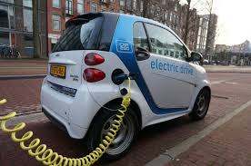

Tipos

Simplificadamente, a eletrificação veicular na indústria dividiu-se em duas vertentes: a dos veículos puramente elétricos e a dos veículos híbridos (o qual possui um motor de combustão interna e um elétrico). Dentre os elétricos, existem os seguintes modelos:
BEV - Battery Electric Vehicles – O tipo mais frequente de modelo puramente elétrico, no qual a energia provém da bateria e a recarga é feita pela conexão à rede elétrica.
FCEV - Fuel Cell Electric Vehicles – Modelos cuja carga das baterias é feita por uma célula-combustível, normalmente a hidrogênio.
RPEV - Road Powered Electric Vehicles – Incluem-se nessa categoria os trólebus – que, a princípio, não dispõem de baterias, estando constantemente conectados à rede elétrica.